Week 3
Certainty That Isn’t True
Takeaway. The real danger is false certainty that has hardened.
Opening question. When has a certainty you were sure of turned out not to be true, and what did that change?
Setting
We learn to tell conviction from closure.
Context
John 9 is a long dispute about seeing. A man born blind receives his sight, and the people who are sure they already see cannot bear the evidence in front of them. Paul and the writer of Proverbs name the same danger in a single sentence each. Faith may certainly have convictions. The question this week is what happens when a conviction hardens into a certainty nobody can question, not even the Word itself.
Scripture
Texts. 1 Corinthians 8:2; Proverbs 26:12; John 9
“Anyone who claims to know all the answers doesn’t really know very much.”
1 Corinthians 8:2, NLT
“There is more hope for fools than for people who think they are wise.”
Proverbs 26:12, NLT
“If you were blind, you wouldn’t be guilty,” Jesus replied. “But you remain guilty because you claim you can see.”
John 9:41, NLT
Reflection
- Scripture’s warning about knowing too much. Read 1 Corinthians 8:2 and Proverbs 26:12 slowly. Notice where the danger sits. It is with people who are sure they already have the answers, more than with people who simply don’t know. A soft heart can still learn, and a hardened certainty can’t.
- A man who can see, and people who claim to. Tell the story of John 9. The miracle is plain. The resistance comes from minds already made up. Those who claim they can see have no room left for the light that has just come among them. Jesus’ last word in the chapter is a judgment on that kind of seeing.
- What we know for sure that isn’t so. In 1874 the humorist Josh Billings wrote, “I honestly believe it is better to know nothing than to know what ain’t so.” A later, popular form of that warning is often credited to Mark Twain, though the words have not been found in Twain’s work. Either way, that is sedimentation in one sentence. Gaps in what we know can be filled. A false certainty that has already set is much harder to move.
- Conviction is not the same as closure. Nobody here is being asked to believe less or to treat every truth as up for grabs. We are only being asked to leave the file open with God. Hebrews 3:15 still stands over the week: today, when you hear his voice, don’t harden your hearts. A living conviction still answers to that voice.
For Discussion
- What is the difference, in your own life, between a conviction and a closed conclusion?
- In John 9, what are the religious leaders protecting, and why is the healed man such a threat to it?
- Where have you seen someone (or yourself) use “I already studied this” as a way to end a conversation?
- How can a church hold firm beliefs and still keep a soft heart toward further light from Scripture?
- What would it look like this week to reopen one certainty and test it honestly against the Word?
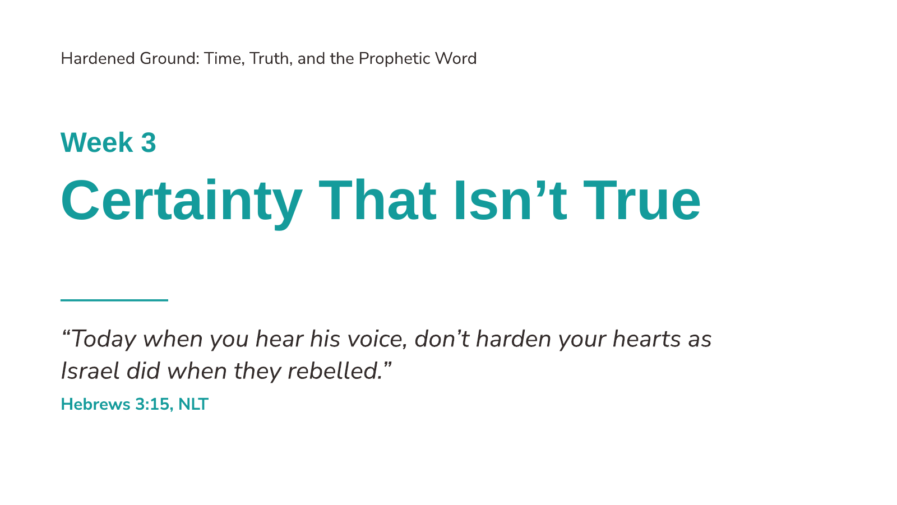
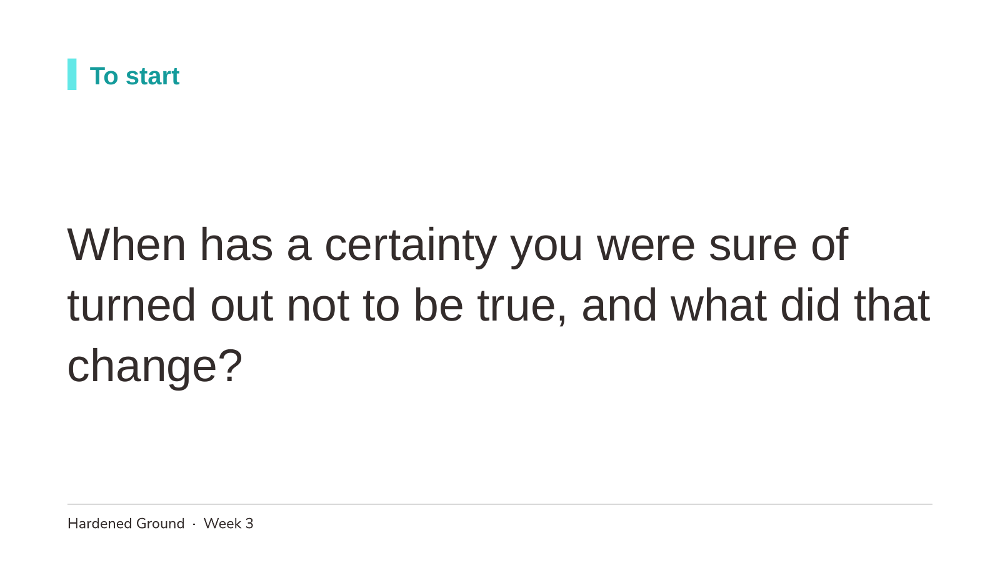
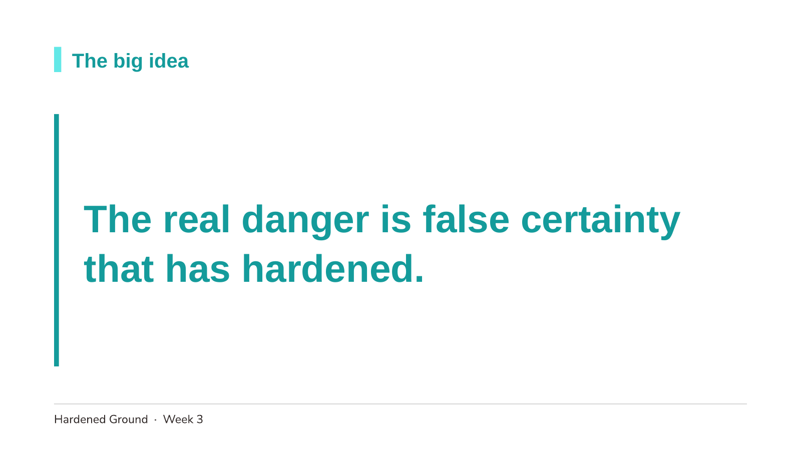
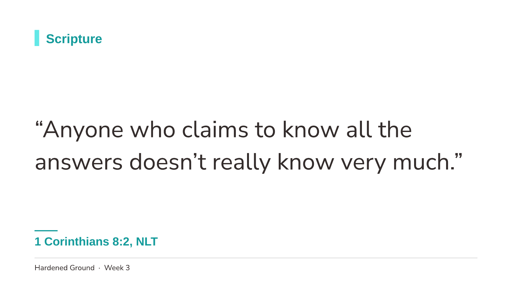
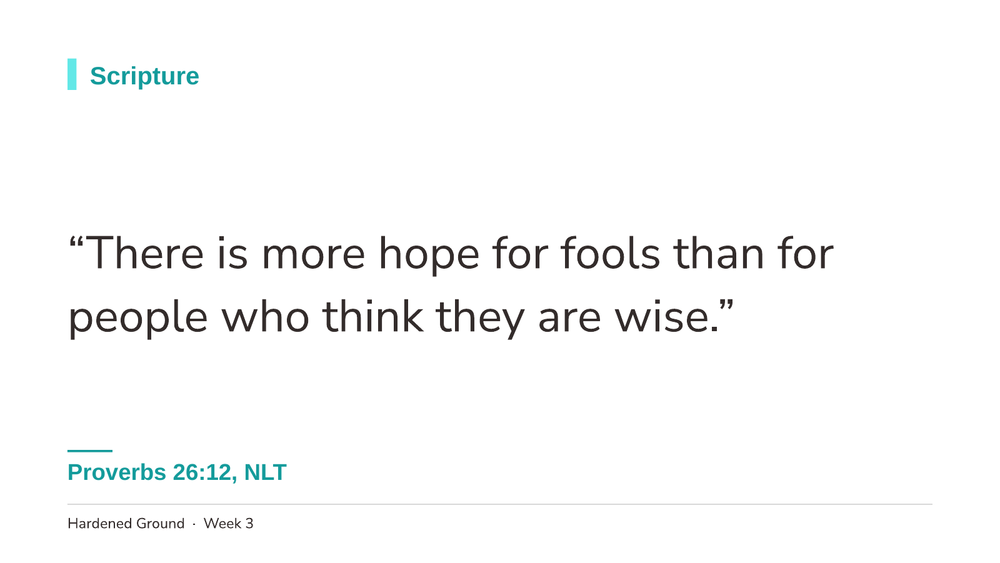

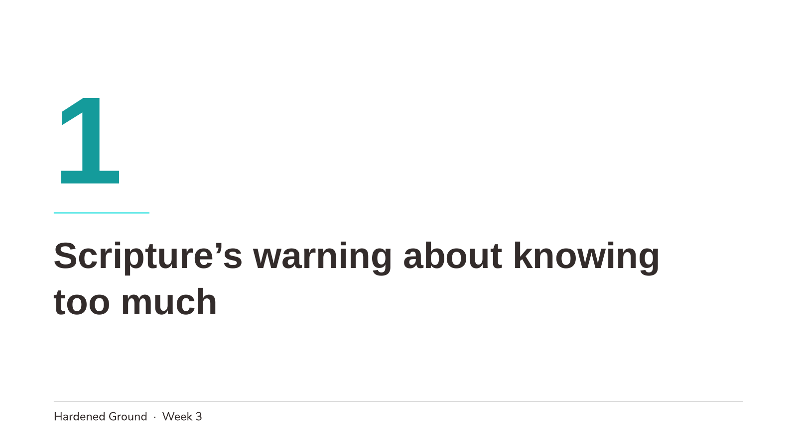
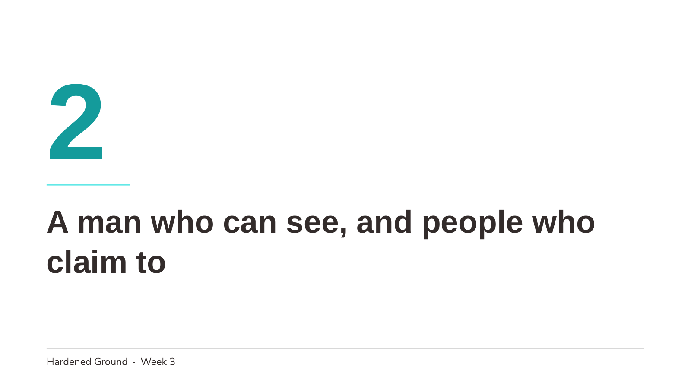
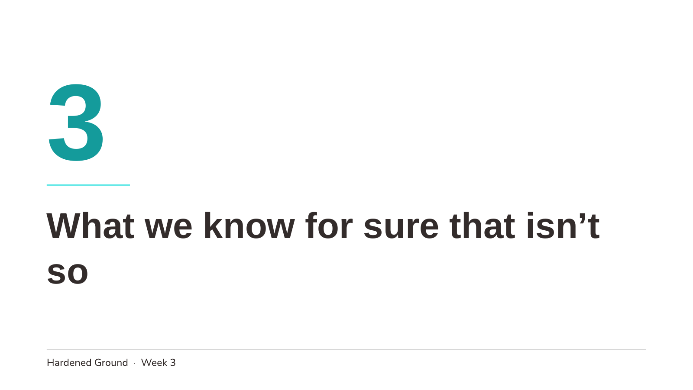


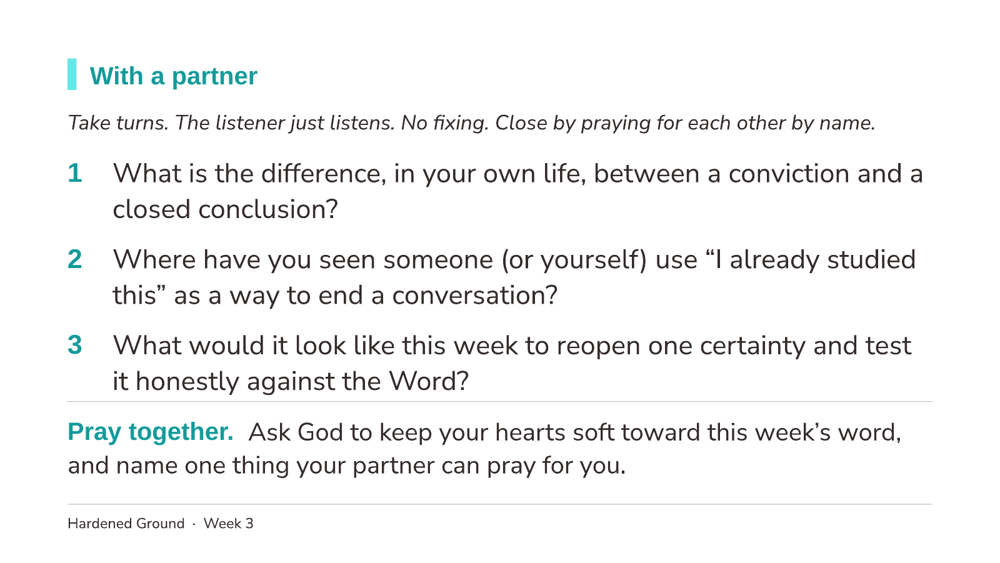
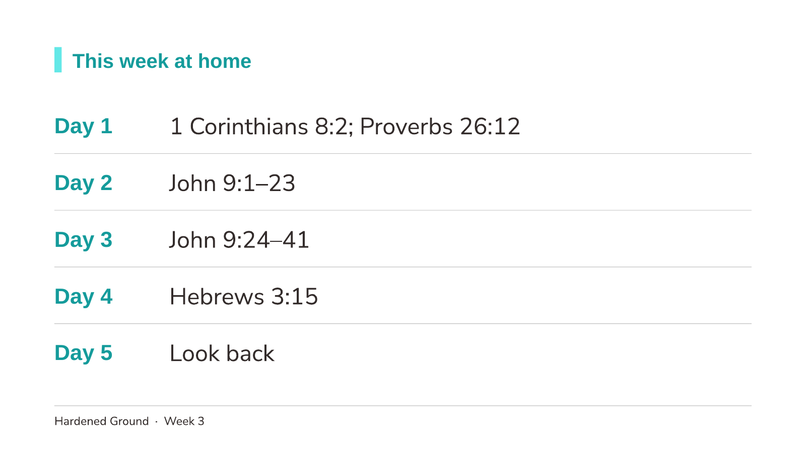
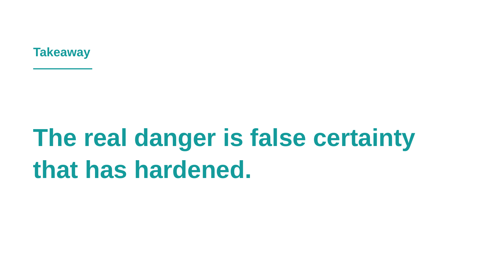